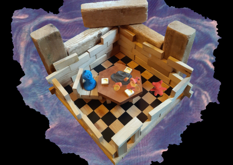
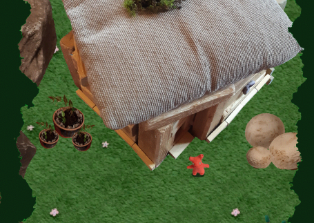

Splodge is a game made with clay and other things found nearby. It was made by myself, Douglas Flinders and James Wood for the 2020 Global Game Jam.
We were at Coatsink's Jam Site near the Lake District in some kind of Georgian mansion, which had a games room with both a normal-sized, and a giant-sized Jenga set. Using these as inspiration, along with other objects such as moss and mushrooms, we created tiny worlds for the clay character to move through.
In the game you talk to other clay creatures and solve riddles to mend their broken objects.
